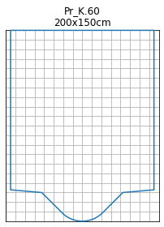
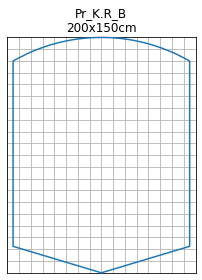
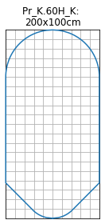

Examples for box shaped profiles¶
[1]:
from shape_generator import CrossSection
unit = 'cm' # only for the title in the plot
[2]:
no = 'K.60'
height = 200
width = 150
kasten = CrossSection.box_from_string(no, height=height, width=width, unit=unit)
fig = kasten.profile_abs_figure()
______________________________
Pr_K.60 -> K.60

[3]:
no = 'K.R_B'
height = 200
width = 150
kasten = CrossSection.box_from_string(no, height=height, width=width, unit=unit)
fig = kasten.profile_abs_figure()
______________________________
Pr_K.R_B -> K.R_B

[4]:
no = 'K.60H_K'
height = 200
width = 100
kasten = CrossSection.box_from_string(no, height=height, width=width, unit=unit)
fig = kasten.profile_abs_figure()
______________________________
Pr_K.60H_K -> K.60H_K

[5]:
print(kasten.inp_string())
Pr_K.60H_K_200x100 shape 0.0031 0.0305
Pr_K.60H_K_200x100 0.0063 0.0429
Pr_K.60H_K_200x100 0.0094 0.0523
Pr_K.60H_K_200x100 0.0126 0.0601
Pr_K.60H_K_200x100 0.0157 0.0668
Pr_K.60H_K_200x100 0.0188 0.0728
Pr_K.60H_K_200x100 0.0220 0.0781
Pr_K.60H_K_200x100 0.0251 0.0831
Pr_K.60H_K_200x100 0.0282 0.0876
Pr_K.60H_K_200x100 0.0314 0.0918
Pr_K.60H_K_200x100 0.0345 0.0957
Pr_K.60H_K_200x100 0.0377 0.0994
Pr_K.60H_K_200x100 0.0408 0.1028
Pr_K.60H_K_200x100 0.0439 0.1061
Pr_K.60H_K_200x100 0.1879 0.2500
Pr_K.60H_K_200x100 0.7500 0.2500
Pr_K.60H_K_200x100 0.7532 0.2500
Pr_K.60H_K_200x100 0.7563 0.2499
Pr_K.60H_K_200x100 0.7595 0.2498
Pr_K.60H_K_200x100 0.7627 0.2497
Pr_K.60H_K_200x100 0.7658 0.2495
Pr_K.60H_K_200x100 0.7690 0.2493
Pr_K.60H_K_200x100 0.7722 0.2490
Pr_K.60H_K_200x100 0.7753 0.2487
Pr_K.60H_K_200x100 0.7785 0.2484
Pr_K.60H_K_200x100 0.7816 0.2480
Pr_K.60H_K_200x100 0.7848 0.2476
Pr_K.60H_K_200x100 0.7880 0.2471
Pr_K.60H_K_200x100 0.7911 0.2466
Pr_K.60H_K_200x100 0.7943 0.2460
Pr_K.60H_K_200x100 0.7975 0.2455
Pr_K.60H_K_200x100 0.8006 0.2448
Pr_K.60H_K_200x100 0.8038 0.2441
Pr_K.60H_K_200x100 0.8070 0.2434
Pr_K.60H_K_200x100 0.8101 0.2427
Pr_K.60H_K_200x100 0.8133 0.2419
Pr_K.60H_K_200x100 0.8165 0.2410
Pr_K.60H_K_200x100 0.8196 0.2401
Pr_K.60H_K_200x100 0.8228 0.2392
Pr_K.60H_K_200x100 0.8259 0.2382
Pr_K.60H_K_200x100 0.8291 0.2372
Pr_K.60H_K_200x100 0.8323 0.2361
Pr_K.60H_K_200x100 0.8354 0.2349
Pr_K.60H_K_200x100 0.8386 0.2338
Pr_K.60H_K_200x100 0.8418 0.2325
Pr_K.60H_K_200x100 0.8449 0.2313
Pr_K.60H_K_200x100 0.8481 0.2299
Pr_K.60H_K_200x100 0.8513 0.2286
Pr_K.60H_K_200x100 0.8544 0.2271
Pr_K.60H_K_200x100 0.8576 0.2257
Pr_K.60H_K_200x100 0.8608 0.2241
Pr_K.60H_K_200x100 0.8639 0.2225
Pr_K.60H_K_200x100 0.8671 0.2209
Pr_K.60H_K_200x100 0.8703 0.2192
Pr_K.60H_K_200x100 0.8734 0.2174
Pr_K.60H_K_200x100 0.8766 0.2156
Pr_K.60H_K_200x100 0.8797 0.2137
Pr_K.60H_K_200x100 0.8829 0.2117
Pr_K.60H_K_200x100 0.8861 0.2097
Pr_K.60H_K_200x100 0.8892 0.2076
Pr_K.60H_K_200x100 0.8924 0.2055
Pr_K.60H_K_200x100 0.8956 0.2032
Pr_K.60H_K_200x100 0.8987 0.2009
Pr_K.60H_K_200x100 0.9019 0.1986
Pr_K.60H_K_200x100 0.9051 0.1961
Pr_K.60H_K_200x100 0.9082 0.1936
Pr_K.60H_K_200x100 0.9114 0.1909
Pr_K.60H_K_200x100 0.9146 0.1882
Pr_K.60H_K_200x100 0.9177 0.1854
Pr_K.60H_K_200x100 0.9209 0.1825
Pr_K.60H_K_200x100 0.9241 0.1795
Pr_K.60H_K_200x100 0.9272 0.1763
Pr_K.60H_K_200x100 0.9304 0.1731
Pr_K.60H_K_200x100 0.9335 0.1697
Pr_K.60H_K_200x100 0.9367 0.1663
Pr_K.60H_K_200x100 0.9399 0.1626
Pr_K.60H_K_200x100 0.9430 0.1589
Pr_K.60H_K_200x100 0.9462 0.1549
Pr_K.60H_K_200x100 0.9494 0.1508
Pr_K.60H_K_200x100 0.9525 0.1466
Pr_K.60H_K_200x100 0.9557 0.1421
Pr_K.60H_K_200x100 0.9589 0.1374
Pr_K.60H_K_200x100 0.9620 0.1325
Pr_K.60H_K_200x100 0.9652 0.1273
Pr_K.60H_K_200x100 0.9684 0.1217
Pr_K.60H_K_200x100 0.9715 0.1159
Pr_K.60H_K_200x100 0.9747 0.1096
Pr_K.60H_K_200x100 0.9778 0.1029
Pr_K.60H_K_200x100 0.9810 0.0956
Pr_K.60H_K_200x100 0.9842 0.0875
Pr_K.60H_K_200x100 0.9873 0.0785
Pr_K.60H_K_200x100 0.9905 0.0682
Pr_K.60H_K_200x100 0.9937 0.0559
Pr_K.60H_K_200x100 0.9968 0.0397